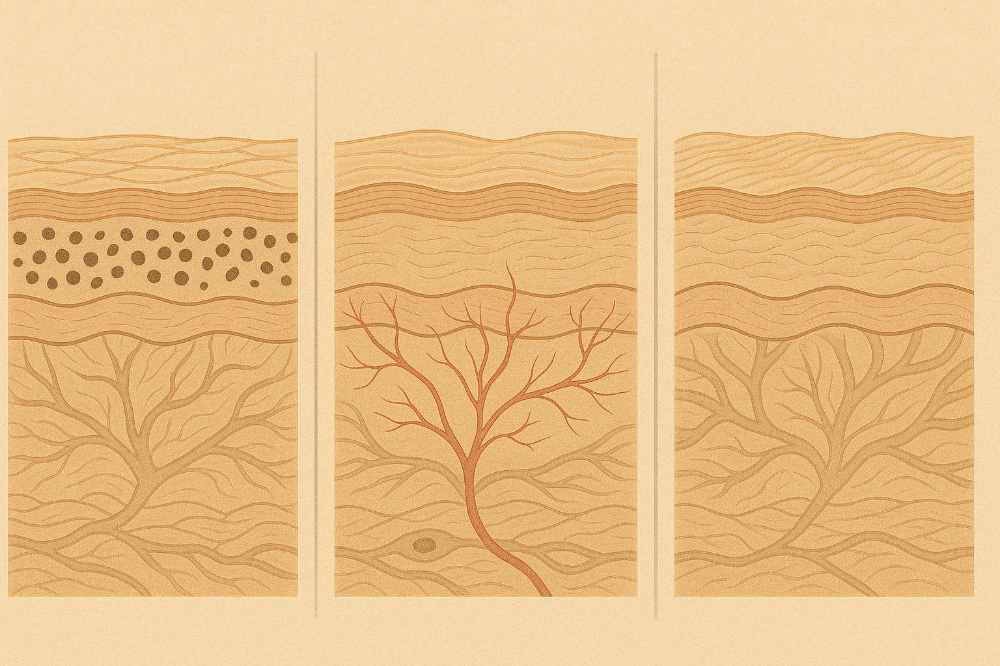
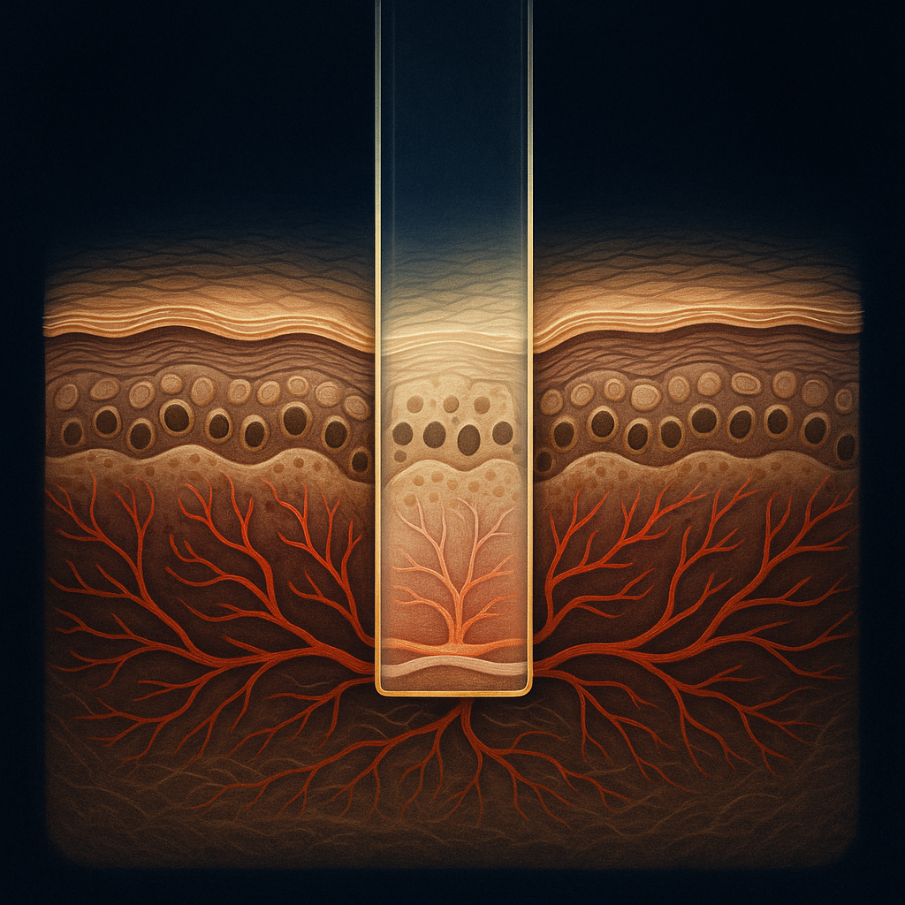
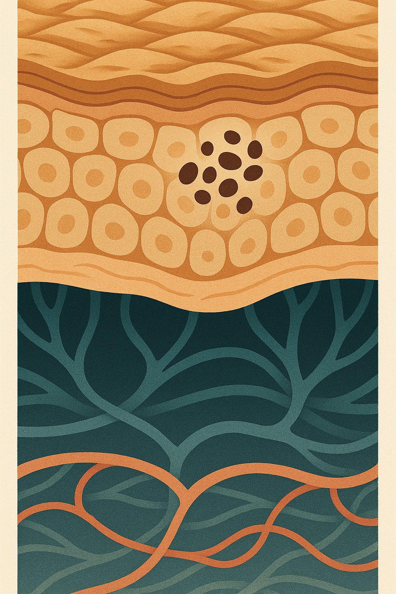

Review below. Reply approve to publish the Facebook post, or tell me edits.

Here is a small tragedy that plays out in bathrooms across Australia every day. Someone buys a "brightening" serum to calm their redness. Someone else buys a redness cream to fade their sun spots. Six weeks later, nothing has shifted, and they conclude that skincare is a scam. Sometimes it is. But often the product was fine. It was just aimed at the wrong target.
Because "uneven skin tone" is not one problem. It is three. And they look similar enough in the mirror that most of us never stop to ask which one we actually have. Before you spend a cent on anything, that is the useful move: learning to see the difference.
When your skin reads as patchy, uneven or "not my best", the cause is almost always one of three sources, or some mix of them. They come from completely different places in the skin, which is exactly why they respond to completely different things.
Think of it like this. One is pigment. One is blood. One is light and shadow. Once you can tell them apart, the whole thing gets a lot less confusing.
This is the family everyone knows: sun spots, freckling, melasma, and the brown marks left behind after a breakout heals. Pigment concerns are brown or tan, they usually have a reasonably defined edge, and crucially, they stay put. The spot that is there this morning will be there tonight, and it will be a little darker after a summer of sun.
The key mental picture: this is clustered melanin sitting within the skin, not a stain smeared on the surface. Your skin made extra pigment in one area, often as a response to sun or inflammation, and parked it there. That is why it does not wipe off and does not come and go.
This is redness. The flush that climbs your cheeks in a hot kitchen, the persistent pink across the nose and cheeks, the fine visible capillaries near the surface. Vascular concerns are pink to red, more diffuse than pigment (softer edges), and they react to things: heat, exercise, a glass of wine, embarrassment, cold wind.
The picture here is circulation showing through the skin, not pigment held inside it. Blood vessels near the surface dilate and the colour reads through. This is why a "brightening" product aimed at melanin does almost nothing for it. There is no excess pigment to fade. It is plumbing, not paint.
This is the sneaky one. Sometimes skin looks uneven in tone when the pigment is actually quite even. What you are really seeing is surface texture: rough patches, enlarged-looking pores, fine lines, all of them catching light and casting tiny shadows. Colour reads patchy because the surface is not smooth, so light bounces unevenly off it. (We pulled this thread apart in an earlier piece on why some skin looks dull and other skin looks lit from within. Same optics, different question.)
The tell: this kind of "unevenness" softens dramatically in flat, even light and looks worse under a harsh overhead bathroom bulb that rakes across every ridge.
Here is a genuinely useful at-home check you can do on any skin, any brand, your own mirror, right now.
> The glass test (worth saving for later). Press a clean glass slide, or the flat base of a clear drinking glass, gently against the patch that bothers you. Watch what the colour does under light pressure.
Two more clues that cost nothing. Sunlight worsens pigment, so if a mark reliably darkens over summer, it is melanin. Heat worsens vascular, so if the redness flares in a hot shower, after exercise or with wine, it is blood. And if the patchiness all but vanishes in soft, flat light but jumps out under a hard overhead bulb, you are mostly looking at texture.
None of that needs a clinic or a device. It just needs paying attention.
This is the honest part, and it is why the diagnosis matters. Each source responds to different things, and no single product or gadget resets all three.
Notice those are three different jobs. The reason "nothing works" is often that one product was quietly being asked to do all three.
Honestly? As a gentle supporting habit, it can play a small part, and we would rather tell you exactly where the line is than oversell it.
Consistent light therapy is associated with supporting microcirculation and an even, calmer-looking tone over a stretch of weeks. Used as a low-effort daily ritual (something like ten minutes), that is the realistic frame: a maintenance habit that supports overall tone, not a targeted eraser. It is a cosmetic device, not medicine. It will not lift deep-set melasma and it will not erase broken capillaries. For stubborn pigment or established vascular concerns, a dermatologist or a laser clinic will do far more than any at-home device, and that is simply the truth.
We will also say the obvious: Redermis is new. We are still earning our reviews, so please weigh all of this against everything else you know rather than taking our word as the last one.
If you want a closer look at the mask and its full spec, here is the LED face and neck mask.
Before you buy anything for "uneven skin tone", do the glass test and ask the three questions. Does it hold still, or come and go? Does sun darken it, or heat flare it? Does it fade in soft light? Naming which of the three you have is the single most valuable, and cheapest, step you can take. Everything you spend after that finally has something to aim at.

Uneven skin tone is not one problem. It is three.
If a brightening serum has done nothing for your redness, it is not you. It is the wrong category.
Most "uneven tone" is actually three different things wearing the same name, and each one needs a different lane.
Pigment: brown, sits still, worsens in the sun. Think old spots and patches that darken on a beach day.
Redness: pink, moves around, worsens with heat, wine and exercise. It flushes and settles.
Texture: colour that only reads patchy because the surface is uneven, not the pigment. Light catches it wrong.
The one useful trick: gently press a piece of clear glass to your skin. Redness that fades under the pressure is circulation (vascular). Colour that stays put is pigment. That tells you which lane you are in before you spend a cent.
Honest bit: no single device fixes all three. Where light therapy sits, hedged: a calm daily habit (ten minutes) that supports microcirculation and an even-looking tone over weeks. Cosmetic, not medical. It is not a fix for deep pigment or broken capillaries. A professional does more for those.
Redermis is a new brand still earning its reviews, so we would rather teach you to read your own skin than sell you the wrong thing.
No pitch, just the method. If you are curious what we make, the mask and full spec are here: https://redermis.com.au/products/medical-grade-silicone-7-wevelenghts-photon-led-mask-face-and-neck-red-light-therapy-flexible-facial-mask-repair-skin-wireless-use
Which of the three is yours? Comment P, R or T. Save this for your next skincare-aisle trip, and tag the friend who keeps buying the wrong serum.
#redlighttherapy #unevenskintone #hyperpigmentation #skincaretips #redermis

You do not have uneven skin tone. You have one of three.
And most people spend months treating the wrong one.
Here is how to tell them apart.
Pigment: brown, stays put, sun makes it worse.
Redness: pink, comes and goes, heat and wine flare it.
Texture: colour looks patchy because the surface is uneven, not the pigment.
The one test worth doing: press a piece of clear glass gently to your skin.
Fades under the pressure: that's circulation (redness).
Stays put: that's pigment.
Now you know which one you are actually dealing with.
One honest note, because it matters: no single gadget resets all three. Red light therapy is a gentle daily habit that can support an even-looking tone over weeks (ten minutes a day). It is cosmetic, not medical, and it is not a fix for deep marks or broken capillaries. No device resets all three, whatever the ad says.
No discount today, just a clearer mirror.
Full spec on the mask is in our bio if you want a closer look.
#skintone #unevenskintone #skincaretips #skinbarrier #hyperpigmentation #skinredness #skinhealth #australianskincare #redlighttherapy #skincareeducation #glowfromwithin #skinlongevity
# Uneven Skin Tone Is Really 3 Problems: How to Tell Pigment, Redness and Texture Apart
Uneven skin tone causes come down to three, so most of us end up treating the wrong one. The glass-test payoff: press clear glass gently to the patch, and what fades under the pressure is redness (circulation), while what stays put is pigment. Pigment sits as flat brown or tan patches (sun and hormones), redness is warm and flushes (barrier or vascular), and texture is just light bouncing off bumps, pores and fine lines. Learn to read yours in the mirror before you buy another serum, and match the fix to the cause. This is a cosmetic step, not a medical treatment, and we are a newer Australian brand still earning our reviews, so weigh it against everything else you know.
If you want a closer look, a 10-minute LED face mask at home and its full spec are here: https://redermis.com.au/products/medical-grade-silicone-7-wevelenghts-photon-led-mask-face-and-neck-red-light-therapy-flexible-facial-mask-repair-skin-wireless-use
#unevenskintone #skincaretips #redlighttherapy #ledfacemask #skinbarrier